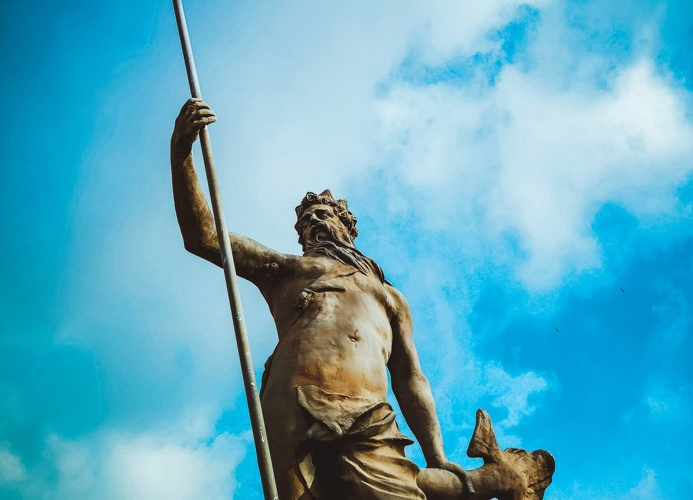
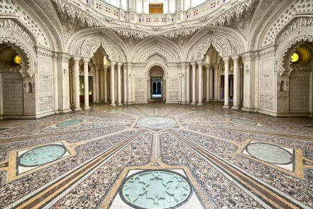
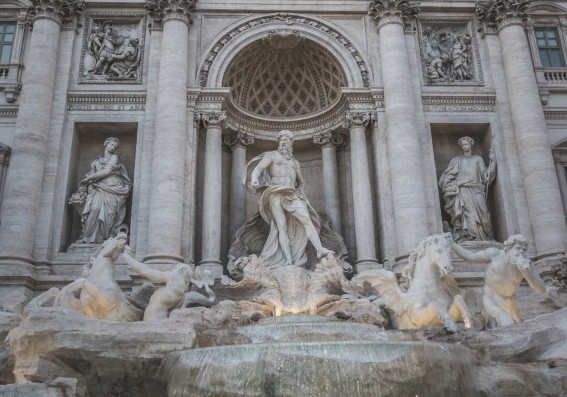

Submited
Atlantis: The Lost City

Plato (through the character Critias in his dialogues) describes Atlantis as an island larger than Libya and Asia Minor put together, located in the Atlantic just beyond the Pillars of Hercules—generally assumed to mean the Strait of Gibraltar. Its culture was advanced and it had a constitution suspiciously similar to the one outlined in Plato’s “Republic.” It was protected by the god Poseidon, who made his son Atlas king and namesake of the island and the ocean that surrounded it. As the Atlanteans grew powerful, their ethics declined. Their armies eventually conquered Africa as far as Egypt and Europe as far as Tyrrhenia (Etruscan Italy) before being driven back by an Athenian-led alliance. Later, by way of divine punishment, the island was beset by earthquakes and floods, and sank into a muddy sea.

The fertile and beautiful city of Atlantis, where half god and half human beings lived, is believed to have been a self-sufficient region where people grew their own food and reared animals. They also built beautiful buildings and other architectures from materials like black and red stone. They also had access to rare metals and even alloys like brass, made and used crystals extensively for leisure and experimental purposes and had a lot of free time to even play with volcanoes.

The inhabitants of the Atlantis city believed to have the possessors of exceptional powers such as the ability to control weather, modify volcanic eruptions. Some accounts also mention about their possession of some sort of device that allowed them to channell energy from time and space. Even though the myth says that the inhabitants of the Atlantis City were superior beings, there are some of the opinions that it is just a mythical representation of a barbaric fashion of life.